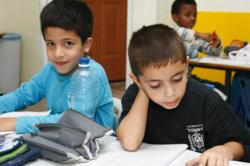
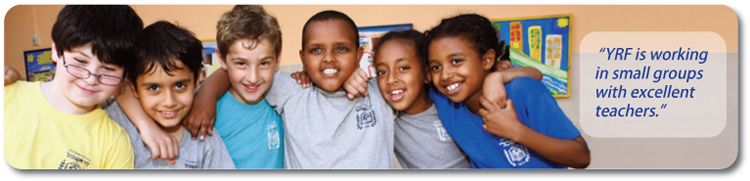
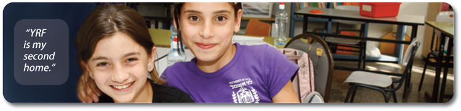
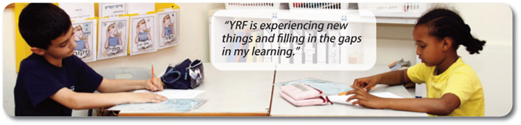
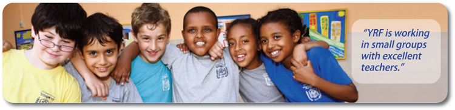
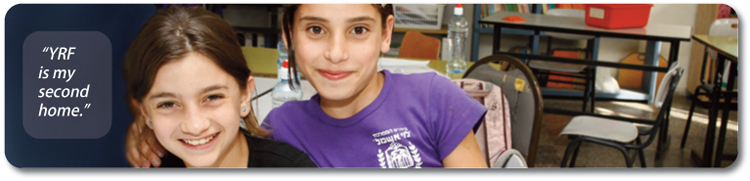
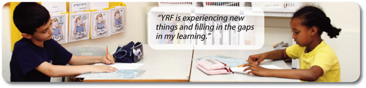

Click to read YRF Persuasive Essay.
The essay discusses the link between poverty and education, and how it is a serious issue. It then goes on to talk about the Youth Renewal Fund, and how it is effective.

"He who teaches a child is as if he had created it" (Talmud Sanhedrin 19a). This quote could be interpreted as saying that a child is not ready to become an adult and go out into the world until he or she has been educated. All around the world, children become adults without the skills they need to sustain themselves because they lack education. Without these world skills, they become poor. As is the case with many countries, many children in Israel cannot get the education they need because of poverty. The "Youth Renewal Fund" is a non-profit organization that works to give underprivileged children in Israel the education that they are entitled to.
Children living under the poverty line suffer from a lack of education globally. The poverty line is measured in terms of daily income. If a family has less than this income per day, they are officially considered poor. The poverty line in Israel is $7.30. Studies have shown a strong relation between poverty and a lack of education. In Chile, for example, one fourth to one third of household incomes have been discovered to have a direct correlation with the head of the household's education. This means that a good education is linked to higher incomes and more success. In places with weaker education systems, many privileged children rely on separate learning at home. Children living in poor conditions without materials or well-educated parents cannot get this after school enrichment. The issue affects children and adults alike, as a child with an insufficient education grows up into an unprepared adult. Undereducated adults have few options for employment and generally limited life choices.
This issue of underprivileged children also being undereducated is serious, growing, and can get out of control if it is not addressed early. An undereducated child is affected even more negatively in adulthood than in early life. Because education and income have been proven to be linked, a ruthless continuous cycle begins where when one person becomes poor, their descendants through future generations will suffer the same disadvantages. Moreover, a poorly educated population can have very negative effects on a society. Without a stable job, many adults will turn to crime. This cycle brings down society, due to more crime and fewer workers. One generation of under-educated children can lead to many more generations living in the same conditions. Eventually, the problem will grow dangerously large and will grow to affect even more than today's one sixth of children worldwide who live in poverty. This issue connects to the Jewish value of חינוּך, or education. This Jewish value says that education is an important attribute of life and everyone has a right to it. Living in poverty forcefully takes away this right from many children.
Non-profit organizations around the world are working to educate the underprivileged. Organizations such as Learning Mind in the United States or Asha-Jyothi in India do this by finding poor children in the areas they serve and filling in holes in the children's education. These educational holes are subjects that the child has not learned very well, or not learned at all, either for personal reasons related to poverty, or because of a bad educational system. Thes organizations either tutor the students privately or in classes or provide materials and other necessities of learning. These organizations are almost very effective with the children they tutor. In fact, approximately 90% of their clients end up at or above grade level. However, they can only serve a small population, since they tutor children privately or in small groups. These organizations do not approach the problem from multiple angles, so they are slowly helping a small population.
The organization "Youth Renewal Fund" works to eliminate the cycle of underprivileged children being continually undereducated in Israel. Youth Renewal Fund addresses the problem with multiple programs. They began in 1989 in the United States by four men who knew about Israel's poor education system. Since inception, the "YRF" has worked to accomplish its mission: "to provide supplemental education to underprivileged children in Israel." The YRF's main program consists of taking underprivileged children for after-school tutoring. It teaches school-aged children who cannot get the supplemental learning they need. The tutoring program teaches classes in core subjects, along with usage of new technology. Children are taught in small classes of 12 students. YRF chooses to focus on larger populated communities instead of smaller ones, so they can make an even bigger difference. They currently do not work in small cities. 88% of their high-school students have finished on the general high school track after taking this program. This tutoring is the organization's core program, but it is only one of many approaches. The YRF also has a workshop for teachers. YRF believes that the problem in Israel also stems from teachers' lack of experience and bad teaching. By improving the teachers, they improve the learning process permanently. Lastly, YRF has multiple learning centers set up in schools. These learning centers are available to many, so it serves a large population. Children can learn English and math through the books and technology that the learning centers are filled with. By implementing multiple programs that address the issue in different ways, YRF is an extremely effective organization.
The Youth Renewal Fund is a particularly important organization because Israel needs these tutoring programs more than other industrialized countries. 35% of Israelis are living in poverty, putting it at 41 of the 64 tested by the PISA (Program for International Student Assessment). Nearly 75% of Israeli eighth graders cannot perform basic mathematical calculations. The YRF continues to work with many underprivileged children. These children will grow into adults with a better chance of finding a job, and living a better life than without the YRF. If it continues at this pace, the cycle of poverty and under education will be cut off in Israel eventually. However, the job does not stop there. The problem exists throughout the world, so everyone must help these organizations to stop the cycle.
While the cycle of poverty and under education may start small, it has severe consequences to a society. The problem exists world-wide, and it is growing. This problem will follow children into their adult life and future generations. Organizations such as the YRF are important to ensure future education for all children. The YRF teaches the children, or "creates" them. The more children that are given a chance in life through education, the more prosperous a nation, and the world, will be.
   
  